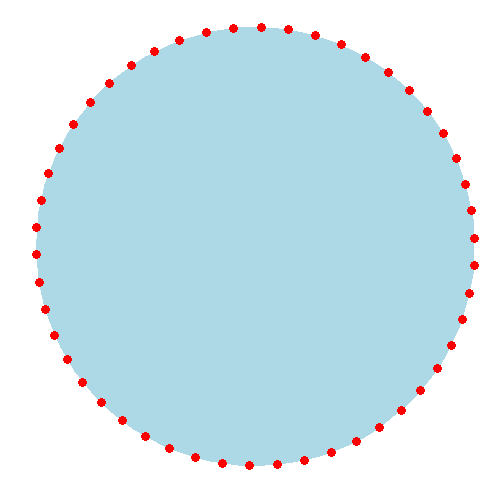
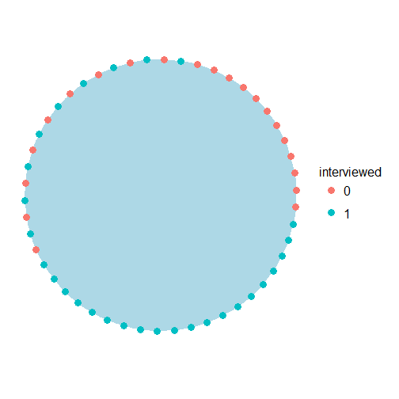
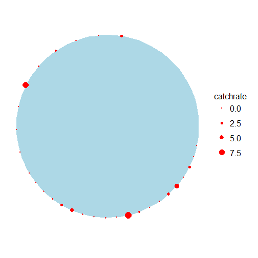

Simulating angler survey data
The RMarkdown source to this file can be found here
In doing some reading recently, I came across Programs to Simulate Catch Rate Estimation in a Roving Creel Survey of Anglers authored by Colin J . Greene, John M . Hoenig, Nicholas J . Barrowman, and Kenneth J. Pollock.
There is some code in this report to simulate an angler population and generate catches. The code is written in Splus and I thought I would mess around with it in R. All credit for the code goes to these authors and I only made slight modifications of the code below. The few changes that were made here and there was to output the data as data.frames and to not calculate total catch rates.
makeanglers()
makeanglers <- function(nanglers = 50) {
# This function generates a simulated angler population with a set location,
# starting time , and trip length.
anglers <- data.frame(angl.id = 1:nanglers)
start.pos <- 0.004
spacing <- (1 - start.pos)/nanglers
anglers$loc <- seq(from = start.pos, by = spacing, length = nanglers)
# Give all the anglers a start time representing 1.0 hour into the fishing
# day
anglers$starttime <- rep(1, nanglers)
# Assign each angler a triplength, where the duration of the trip will
# alternate between 3 and 6 hours as the anglers alternate .
anglers$triplength <- c(rep(c(3, 6), nanglers/2))
# NOTE : nanglers/2 = 25 . If the value of nanglers is an odd number, the
# number of repetions given by rep() would be one number short . For our
# purposes only even numbers were used .
return(anglers)
}Run the function with the 50 anglers to generate the data
anglers <- makeanglers(nanglers = 50)
anglers## angl.id loc starttime triplength
## 1 1 0.00400 1 3
## 2 2 0.02392 1 6
## 3 3 0.04384 1 3
## 4 4 0.06376 1 6
## 5 5 0.08368 1 3
## 6 6 0.10360 1 6
## 7 7 0.12352 1 3
## 8 8 0.14344 1 6
## 9 9 0.16336 1 3
## 10 10 0.18328 1 6
## 11 11 0.20320 1 3
## 12 12 0.22312 1 6
## 13 13 0.24304 1 3
## 14 14 0.26296 1 6
## 15 15 0.28288 1 3
## 16 16 0.30280 1 6
## 17 17 0.32272 1 3
## 18 18 0.34264 1 6
## 19 19 0.36256 1 3
## 20 20 0.38248 1 6
## 21 21 0.40240 1 3
## 22 22 0.42232 1 6
## 23 23 0.44224 1 3
## 24 24 0.46216 1 6
## 25 25 0.48208 1 3
## 26 26 0.50200 1 6
## 27 27 0.52192 1 3
## 28 28 0.54184 1 6
## 29 29 0.56176 1 3
## 30 30 0.58168 1 6
## 31 31 0.60160 1 3
## 32 32 0.62152 1 6
## 33 33 0.64144 1 3
## 34 34 0.66136 1 6
## 35 35 0.68128 1 3
## 36 36 0.70120 1 6
## 37 37 0.72112 1 3
## 38 38 0.74104 1 6
## 39 39 0.76096 1 3
## 40 40 0.78088 1 6
## 41 41 0.80080 1 3
## 42 42 0.82072 1 6
## 43 43 0.84064 1 3
## 44 44 0.86056 1 6
## 45 45 0.88048 1 3
## 46 46 0.90040 1 6
## 47 47 0.92032 1 3
## 48 48 0.94024 1 6
## 49 49 0.96016 1 3
## 50 50 0.98008 1 6We can calculate the total effort by the 50 anglers.
trueeffort = sum(anglers$triplength)
trueeffort## [1] 225We can visualize where the anglers are using ggplot2 and drawing on some geometry from days past.
library(ggplot2)
library(grid)
# source('W:/CreelProject/RFiles/themes.r') source for theme_map
radius <- 1/(2 * pi) # calculate the radius from a circumfrence of 1 (given in the makeanglers() code)
# Create a function to generate the points on a circle Found at
# http://stackoverflow.com/questions/6862742/draw-a-circle-with-ggplot2
circleFun <- function(center = c(0, 0), diameter = 1, npoints = 100) {
r = diameter/2
tt <- seq(0, 2 * pi, length.out = npoints)
xx <- center[1] + r * cos(tt)
yy <- center[2] + r * sin(tt)
return(data.frame(x = xx, y = yy))
}
nanglers <- 50 # Use same number of anglers as above
dat <- circleFun(c(0, 0), diameter = radius * 2, npoints = 100) # run the code to generate circle
points2 <- data.frame(angl.id = 1:nanglers, dist = NA, x = NA, y = NA)
points2$dist[1] <- 0.004 # first angler distance from makeanglers() code
points2$dist[2:length(points2$dist)] <- 0.004 + 0.02 * (points2$angl.id[2:length(points2$dist)] -
1) # add another angler an equidistant point from the initial anglers
points2$angle <- (360 * (points2$dist/(2 * pi * radius))) * (pi/180) # convert that distance along the circumfrence to an angle in radians
# calculate cartesian coordinate using the standard equations
points2$x <- radius * sin(points2$angle) + 0
points2$y <- radius * cos(points2$angle) + 0
lake.map <- ggplot() + geom_polygon(data = dat, aes(x, y), fill = "lightblue") +
geom_point(data = points2, aes(x, y), size = 4, colour = "red") + coord_equal() +
theme_map()
print(lake.map)
gettotalvalues()
This function was originally written to simulate a creel survey and compute estimates of total catch. I modified the code and therefore changed the name to output the interview data, thus changing the function to makeinterview() The basic process of this code is to simulate each anglers fishing day by determining simulating if and when fish are caught during the duration of each fishing trip. Using length() on the times that fish were caught will give you the number caught.
The next step is to simulate a starting position of a creel clerk (or as in the below code, a survey agent) and the speed that the creel clerk will make it around the lake. If the time that a clerk gets to a position is during the duration of the anglers fishing trip then the effort and catch is recorded at the time of the interview. If the trip duration does not fall within the encounter time, then no interview is recorded.
makeinterview <- function(ang = anglers, teffort = trueeffort, nanglers = length(anglers$loc)) {
# Generate a catch history for each angler . Start by obtaining a random
# catch rate parameter for each angler following a Poisson process
lambda <- rgamma(nanglers, 1) * 2
catch <- vector("list", nanglers)
for (i in 1:nanglers) {
# Do this for each angler . Time of day when the angler arrives .
time <- ang$starttime[i]
# If the time calculated below falls within the trip duration, this time
# will be recorded as the instant when the first fish was caught .
time <- time + rexp(1, rate = lambda[i])
# At the beginning of each loop through the while statement, check to see if
# the current fish capture time falls within the duration of the trip .
while (time <= ang$starttime[i] + ang$triplength[i]) {
### NOTE : the number of fish caught is given by length(catch[[i]]) .
catch[[i]] <- c(catch[[i]], time)
# Calculate the time when the next fish is to be caught .
time <- time + rexp(1, rate = lambda[i])
} # end of while loop
} # end of i for loop
################################################# Obtain a starting postion for the survey agent .
startloc <- runif(1) # Start postion of surveyor
agentspeed <- 0.125 # Speed of the surveyor in circuits per hour (i.e., 1/8)
# This time switch is nesseccary for the simulation of the circular lake,
# with a perimeter of 1.0, where the positions 0.0 and 1.0 are equivalent on
# the lake representation . At this point a'jump' must be made, which is
# accomplished by our timeswitch .
timeswitch <- (1 - startloc)/agentspeed
inteffort <- intcatch <- cr <- vector("numeric", length = length(catch))
# For each sample of anglers
for (i in 1:nanglers) {
# Calculate the time of each interview
if ((startloc < ang$loc[i]) & (ang$loc[i] < 1)) {
timeint <- (ang$loc[i] - startloc) * 8
} else if ((0 < ang$loc[i]) & (ang$loc[i] < startloc)) {
timeint <- ang$loc[i] * 8 + timeswitch
}
# Calculate the fishing effort at the time of each interview
inteffort[i] <- 0
if ((ang$starttime[i] < timeint) & (timeint < ang$starttime[i] + ang$triplength[i]))
{
inteffort[i] <- timeint - ang$starttime[i]
} # else if no interview took place leave inteffort at default 0
# Determine the number caught by the time of the interview
intcatch[i] <- 0
if (length(catch[[i]]) > 0)
{
for (k in 1:length(catch[[i]])) {
if ((catch[[i]][k] < timeint) & (timeint < ang$starttime[i] +
ang$triplength[i])) {
intcatch[i] <- intcatch[i] + 1
}
}
} # else if no fish were caught leave intcatch at default 0
# Calculate catch rate
if (inteffort[i] > 0)
cr[i] <- intcatch[i]/inteffort[i] else cr[i] <- NA
} # end of i for loop
interview.dat <- data.frame(angl.id = ang$angl.id, intcatch = intcatch,
inteffort = inteffort, catchrate = cr)
dat <- list(Actual.catches = catch, interview.data = interview.dat)
return(dat)
}angler.data <- makeinterview(ang = anglers, teffort = trueeffort, nanglers = length(anglers$loc))
angler.data$interview.dat## angl.id intcatch inteffort catchrate
## 1 1 0 0.00000 NA
## 2 2 15 5.96671 2.5139
## 3 3 0 0.00000 NA
## 4 4 0 0.00000 NA
## 5 5 0 0.00000 NA
## 6 6 0 0.00000 NA
## 7 7 0 0.00000 NA
## 8 8 0 0.00000 NA
## 9 9 0 0.00000 NA
## 10 10 0 0.00000 NA
## 11 11 0 0.00000 NA
## 12 12 0 0.00000 NA
## 13 13 0 0.00000 NA
## 14 14 0 0.00000 NA
## 15 15 0 0.03839 0.0000
## 16 16 0 0.19775 0.0000
## 17 17 1 0.35711 2.8003
## 18 18 0 0.51647 0.0000
## 19 19 4 0.67583 5.9186
## 20 20 3 0.83519 3.5920
## 21 21 1 0.99455 1.0055
## 22 22 0 1.15391 0.0000
## 23 23 2 1.31327 1.5229
## 24 24 14 1.47263 9.5068
## 25 25 0 1.63199 0.0000
## 26 26 1 1.79135 0.5582
## 27 27 1 1.95071 0.5126
## 28 28 2 2.11007 0.9478
## 29 29 9 2.26943 3.9658
## 30 30 6 2.42879 2.4704
## 31 31 2 2.58815 0.7728
## 32 32 2 2.74751 0.7279
## 33 33 0 2.90687 0.0000
## 34 34 1 3.06623 0.3261
## 35 35 0 0.00000 NA
## 36 36 0 3.38495 0.0000
## 37 37 0 0.00000 NA
## 38 38 1 3.70367 0.2700
## 39 39 0 0.00000 NA
## 40 40 0 4.02239 0.0000
## 41 41 0 0.00000 NA
## 42 42 37 4.34111 8.5232
## 43 43 0 0.00000 NA
## 44 44 3 4.65983 0.6438
## 45 45 0 0.00000 NA
## 46 46 7 4.97855 1.4060
## 47 47 0 0.00000 NA
## 48 48 2 5.29727 0.3776
## 49 49 0 0.00000 NA
## 50 50 1 5.61599 0.1781In the above angler data, anglers with inteffort = 0 were not interviewed.
We can represent this in ggplot showing all the anglers and anglers not surveyed during that day. Note, that I did not set a seed so your figures may look a little different than this one based on the randomized nature of the catches and starting position.
points3 <- merge(points2, angler.data$interview.dat, by = "angl.id", all = TRUE)
points3$interviewed <- as.factor(ifelse(points3$inteffort > 0, 1, 0))
interview.map <- ggplot() + geom_polygon(data = dat, aes(x, y), fill = "lightblue") +
geom_point(data = points3, aes(x, y, colour = interviewed), size = 4) +
coord_equal() + theme_map()
print(interview.map)
catchrate.map <- ggplot() + geom_polygon(data = dat, aes(x, y), fill = "lightblue") +
geom_point(data = points3, aes(x, y, size = catchrate), colour = "red") +
coord_equal() + theme_map()
print(catchrate.map)## Warning: Removed 21 rows containing missing values (geom_point).
I hope to come back and revist these code frequently in future blog posts. The authors of the report provide several different scenarios which include an effort dependent models, a learner model, and a bag limit model but there are so many more modifications that we can add.